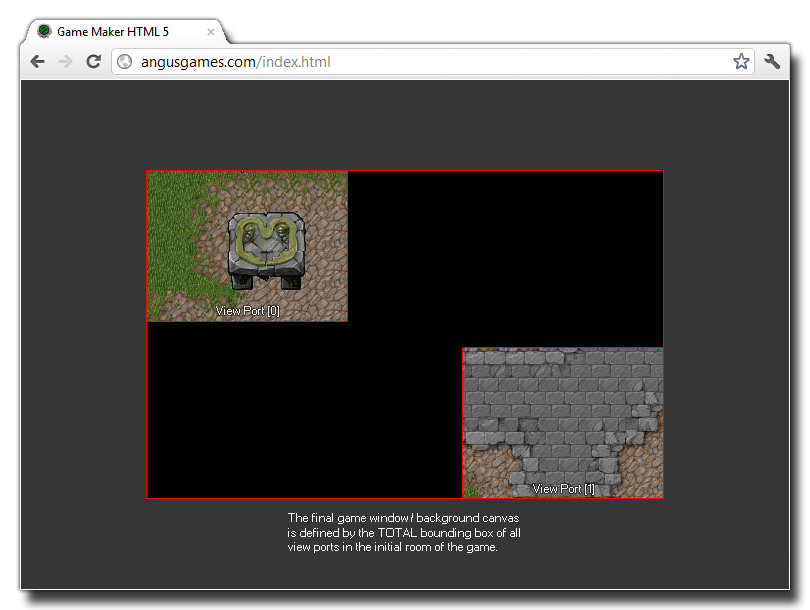

Views are one of the most important of the display properties that you can manipulate with GameMaker:Studio. They are, basically, little windows into your game world that enable you to show
the player parts of a room, either scaled or 1:1, and as such they are essential when your game room is larger than the display size. For information on how views can be set up without code directly from
the room editor, please see the section More About Rooms - Views.
GameMaker:Studio permits you 8 independant views (numbered from 0 - 7), all of which can be active at any one time, and all of which can show different parts of the same room. This means that
you can use views to draw HUD elements or to have split screen effects for example. Each view also has it's own associated view port. If the view is a section of the room that the player can see,
the port is the area of the screen on which this view is drawn, and as such you can distort and scale the view if it is a size other than the view port.
Something to note about views and view ports is that the total area of the bounding box for all active view ports in the first room of the game is what defines the background canvas size (or
window size for MacOS, Ubuntu (Linux) and Windows), as illustrated by the image below:

Finally, you should take care when using multiple views as the draw event for all instances is called once for each view, so if you have three views active in one room, the draw event will be
run three times every step (basically doing three times the work) which can be a cause for slowdown if the game is large or complex. The view_current variable
can be used to help limit these draw calls however.
The following functions exist that deal with views:
- view_enabled
- view_current
- view_visible
- view_object
- view_angle
- view_xview
- view_yview
- view_hview
- view_wview
- view_hborder
- view_vborder
- view_hspeed
- view_vspeed
- view_xport
- view_yport
- view_hport
- view_wport
- view_surface_id
- window_view_mouse_get_x
- window_view_mouse_get_y
- window_views_mouse_get_x
- window_views_mouse_get_y